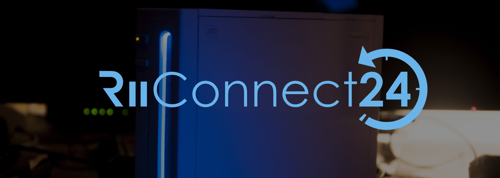
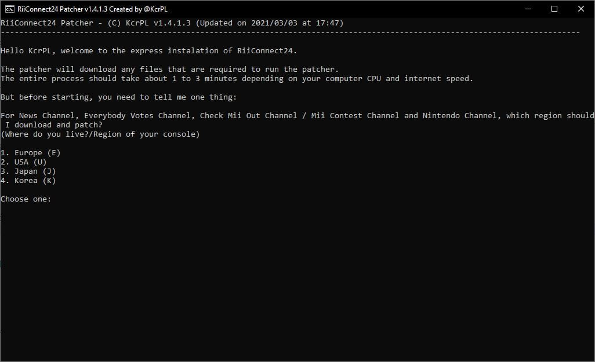

RiiConnect24
If you need help with anything regarding this tutorial, please join the RiiConnect24 Discord server (recommended) or e-mail us at [email protected].

RiiConnect24 RiiConnect24는 WiiConnect24의 서비스 종료된 서비스를 사용할 수 있게 합니다. 여기에는 News, Forecast, Everybody Votes, Nintendo, Check Mii Out 채널 (대한민국 미출시) 이 포함되며 Wii 메일 역시 포함됩니다.
This guide is for regular Wiis only.
- Follow this tutorial if you’d like to install RiiConnect24 on vWii (Wii Mode on Wii U).
- Follow this tutorial if you’d like to install RiiConnect24 on Dolphin Emulator.
DO NOT INSTALL RIICONNECT24 ON A WII MINI! It will not work and it will brick the system.
필요한 것
- SD 카드 및 USB 드라이브
- 인터넷 연결이 있는 Wii
- 컴퓨터
- RiiConnect24 Patcher (Windows, Mac and Linux)
방법
Section I - Using RiiConnect24 Patcher
If you can’t run RiiConnect24 Patcher, please join the RiiConnect24 Discord server (recommended) or e-mail us at [email protected] for further assistance.
- 상단의 링크를 클릭하여 패쳐가 있는 깃허브 페이지로 이동하세요.
- Windows에서
RiiConnect24Patcher.bat을 다운로드하거나 Unix 시스템에서RiiConnect24Patcher.sh를 다운로드하세요 - On Windows run
RiiConnect24Patcher.bat. On Unix systems, open Terminal and typebash, then dragRiiConnect24Patcher.shinto the terminal then press enter. It should look like this:bash RiiConnect24Patcher.sh. - 1을 눌러 “
Start“을 선택하고 선택지를ENTER키로 확인하세요. (NOTE: These screenshots are from the Windows version of the patcher.)
- Select the device you’re patching for.

- For this guide, choose “
Install RiiConnect24 on your Wii”
- Choose “
Express (Recommended)”. It will give you everything you need.
- Select your region. 
- While you’re at it, RiiConnect24 Patcher can additionally download some other optional channels that do not use RiiConnect24.
[X]represents the options that selected. Just press 5 andENTERif you’re not interested.
- Connect your SD Card or USB Drive to your computer and select “
1”.
- 기기가 성공적으로 인식되면, “
1“을 누르세요. If not, make sure there’s a folder calledappson your SD Card or USB Drive and try again.
- Be patient…

- After it’s done, we would appreciate if you take a minute to send anonymous feedback to us. If you don’t want to, close the patcher. All the files should already be on your SD Card.


- If it did not copy everything automatically to your SD Card or USB Device, copy the
WADandappsfolder next toRiiConnect24Patcher.batto your SD Card or USB Device.
Section II - Installing WADs
You will now install the patched IOS and Channel WADs that are required to use RiiConnect24.
- Wii에 SD 카드나 USB 드라이브를 삽입하십시오.
- Wii에서 홈브루 채널을 실행하세요.
- Wii Mod Lite를 실행하세요.
- Wii 리모컨의 +컨트롤 패드를 사용하여,
WAD Manager를 찾으세요. 그 뒤wad폴더로 이동하세요. - Highlight all the WADs in the folder by pressing the + Button to select them. When all of the WADs are selected, press A twice to install the WADs.
- If you get an error saying a title with a higher version is already installed (error -1035), go back to the WAD selection menu and press the - Button on the highlighted WAD to uninstall it, then try installing it again.
- 설치가 완료되고 나면, HOME 버튼을 눌러 홈브루 런처로 되돌아가세요.
섹션 III - nwc24msg.cfg 패치하기
You will now patch your nwc24msg.cfg file which is required in order to use Wii Mail.
- RiiConnect24 메일 패쳐를 실행합니다.
- nwc24msg.cfg 패치까지 몇초 밖에 걸리지 않습니다. When it’s done, press the HOME Button to exit.
If you were unable to patch your nwc24msg.cfg correctly, please join the RiiConnect24 Discord server (recommended) or e-mail us at [email protected] for further assistance.
섹션 IV - 연결
Starting June 16th, 2022 the RiiConnect24 DNS changes. Read more: here.
You will now set your DNS to our servers. This is optional but it’s recommended, because it enhances the use of RiiConnect24 and Wiimmfi by making some other features available.
Wii 옵션으로 이동합니다.Wii 본체 설정으로 이동합니다.페이지 2로 이동하고,인터넷을 클릭하세요.연결 설정으로 이동합니다.- 현재 연결을 선택하세요.
설정 편집으로 이동합니다.DNS 자동 연결(IP 주소가 아님) 으로 이동해서끄기를 선택하고,고급 설정으로 들어갑니다.- Type in
167.86.108.126as the primary DNS. - Type in
1.1.1.1as the secondary DNS. 결정을 선택하고,저장을 선택합니다.OK를 눌러 연결 테스트를 합니다.- 연결 테스트가 성공했다면, Wii 업데이트를
아니요를 눌러 건너뜁니다. WiiConnect24로 이동해서WiiConnect24로 다시 이동한 뒤 활성화 된 것을 확인하세요.- WiiConnect24 메뉴로 돌아가서,
항상 연결이 켜져있는지 확인하세요. 슬롯 밝히기에서, 저희는 디스크 슬롯 전등을어둡게또는밝게를 권장하지만, 선택입니다.- 마지막으로,
인터넷섹션에 들어가서이용 약관또는약관/계약에 들어가서,예를 누르세요. 전체 내용을 읽어 주세요.
It’s common to get error FORE000006 on the Forecast Channel after installing RiiConnect24. If you get it, make sure your Wii’s to the correct date and time, then wait no more than an hour and it may start working. [If you still get error FORE000006 or if you get NEWS000006, you will need to delete your SYSCONF with RC24-Clear-Tool].
You will get error 268503 when loading the Nintendo Channel. This is normal. You can bypass the error by pressing OK.
If you get error 107245, then you have not installed the patched IOS. Make sure you install IOS31 and IOS80 with Wii Mod Lite, along with any other patched WADs.
If you get error 107304 or you see Nintendo’s User Agreement without RiiConnect24’s logo, that means your ISP (Internet Service Provider) or network is blocking the use of a DNS. You can set Auto-Obtain DNS to On to solve this. RiiConnect24 will still work without it. Or, you can use our DNS-Server program.
If you’re getting errors such as WiiConnect24 and Wii Shop Channel currently not being offered in your country, go to Wii Settings -> Last Page -> Country and change it to United Kingdom. You will get this error when using a country that we don’t support. Contact us at [email protected] if you need more help.
Wiimmfi로 계속하기
Wiimmfi는 닌텐도 Wi-Fi 커넥션의 서비스 종료 이후로도 게임을 온라인으로 플레이 할 수 있게 합니다. 설치는 선택입니다.
Continue to WiiLink
WiiLink lets you use the Japanese-exclusive channels known as Wii no Ma and Digicam Print Channel. 설치는 선택입니다.
사이트 네비게이션으로 계속하기
당신이 좋아할만한 많은 튜토리얼이 있습니다.